246 — MLOps, registro, promoción, drift y rollback
Parte: 20 — Plataformas cloud de datos, analítica, IA y agentes
Nivel: avanzado · Horas estimadas: 4
Laboratorio: delivery · Estado: EXECUTABLE_CORE
🎯 Propósito
Operar modelos a lo largo del tiempo, que es donde fallan casi todos los proyectos de aprendizaje automático: el modelo se despliega, funciona, y nadie mira si sigue funcionando. La clase cubre el registro y la promoción con puertas, los tipos de deriva y cómo se detecta cada uno, la vuelta atrás con su particularidad —revertir el modelo no revierte lo que ya decidió—, y el reentrenamiento con su criterio.
📚 Resultados de aprendizaje
Al finalizar podrás:
- Promover modelos por etapas, con puertas comprobables.
- Distinguir los tipos de deriva y detectar cada uno.
- Medir la calidad en producción cuando la etiqueta tarda o no llega.
- Volver atrás sabiendo qué se revierte y qué no.
- Decidir cuándo reentrenar, con un criterio y no por calendario.
🧩 Conceptos centrales
| Concepto | Comprensión verificable |
|---|---|
registro de modelos |
Catálogo de modelos con sus versiones, etapas, métricas y trazabilidad al experimento. |
promoción |
Paso de una versión de una etapa a la siguiente, con puertas que hay que superar. |
deriva de datos |
Las entradas cambian de distribución. Se detecta sin necesidad de etiquetas. |
deriva de concepto |
La relación entre entradas y resultado cambia. Solo se detecta con etiquetas. |
retroalimentación |
Efecto por el que las decisiones del modelo cambian los datos que lo entrenarán. |
reentrenamiento |
Actualización del modelo con datos nuevos. Se dispara por señal, no por calendario. |
🧠 Modelo mental
Una plataforma de IA sigue siendo un sistema de datos: necesita procedencia, evaluación, límites de costo, seguridad y operación antes de una interfaz inteligente.
Aplicado a esta clase, separa siempre cuatro planos: intención (qué necesita el usuario), configuración (qué declaramos), estado observado (qué existe de verdad) y evidencia (cómo sabemos que cumple). Confundirlos produce diseños que se ven correctos en un diagrama pero fallan al operar.
🗺️ Flujo de razonamiento

📖 Desarrollo
1. Registro y promoción
Un modelo en producción tiene que poder responder a tres preguntas, y el registro es lo que las contesta.
¿QUÉ VERSIÓN ESTÁ SIRVIENDO?
¿DE DÓNDE SALIÓ?
¿QUÉ TUVO QUE SUPERAR PARA LLEGAR AQUÍ?
y el registro guarda
la versión, con su artefacto inmutable
el experimento que la produjo clase 244
los datos y su versión
las métricas en el conjunto de prueba
la etapa: desarrollo, preproducción, producción
quién la promovió y cuándo
y la firma del artefacto clase 106
Las puertas de promoción, que hay que declarar antes:
A PREPRODUCCIÓN
el experimento es reproducible clase 244
las métricas superan un umbral mínimo
no hay fuga detectada clase 244
los atributos coinciden con los de servicio
el modelo carga y responde
y la latencia está dentro del objetivo clase 245
A PRODUCCIÓN
espejo o escalonado con tráfico real, sin degradación
el experimento controlado da mejor resultado en la
MÉTRICA DE NEGOCIO ley 17
la evaluación de sesgos y de casos límite pasó
clase 250
el respaldo está probado clase 245
y hay procedimiento de vuelta atrás
Y la regla que evita el problema de siempre:
las puertas se COMPRUEBAN automáticamente
→ si son una lista que alguien marca, se marcan
ley 22
→ y las que no se puedan automatizar se declaran como
manuales, con quién firma
Y una decisión que hay que tomar:
¿QUIÉN PROMUEVE A PRODUCCIÓN?
el equipo que entrena, con las puertas verdes
o alguien más, con aprobación
→ y en modelos que afectan a personas —crédito, selección,
precios— la aprobación es de negocio, no técnica
clase 251
Y la trazabilidad completa:
de la predicción → a la versión del modelo clase 245
→ al experimento
→ al conjunto de datos y su versión
→ a las tablas y sus contratos clase 243
→ y esa cadena es lo que permite contestar una reclamación
y pasar una auditoría
2. Los tipos de deriva
«El modelo se ha degradado» es un diagnóstico incompleto. Hay tres cosas distintas y se detectan de formas distintas.
DERIVA DE DATOS — las ENTRADAS cambian
la distribución de los atributos es otra
ejemplo la proporción de clientes móviles pasa del
40 % al 70 %
→ se detecta SIN etiquetas, comparando distribuciones
→ y es la que se puede vigilar desde el primer día
DERIVA DE PREDICCIÓN — las SALIDAS cambian
el modelo empieza a predecir otra cosa
ejemplo la proporción de «fraude» pasa del 2 % al 9 %
→ tampoco necesita etiquetas
→ y suele ser consecuencia de la anterior
DERIVA DE CONCEPTO — la RELACIÓN cambia
las mismas entradas ya no llevan al mismo resultado
ejemplo una campaña cambia el comportamiento de compra
→ SOLO se detecta con etiquetas
→ y es la que de verdad degrada la calidad
Y LO QUE NO ES DERIVA
un error en la ingesta de un atributo clase 242
un cambio de esquema no anunciado clase 243
→ se manifiestan igual, y se arreglan de otra manera
→ por eso lo primero es descartar que el dato esté mal
Y cómo se mide cada una:
DE DATOS
por atributo: distancia entre la distribución actual y la
del entrenamiento
→ con umbral, y por atributo, no en global
→ un solo atributo derivado puede bastar
DE PREDICCIÓN
distribución de las salidas, comparada con la de
referencia
DE CONCEPTO
la métrica de calidad, calculada cuando llegan las
etiquetas
→ y si tardan 30 días, se sabe con 30 días de retraso
Cuando la etiqueta tarda o no llega, que es el caso habitual:
MÉTRICAS INDIRECTAS
¿el usuario aceptó la sugerencia?
¿el operador corrigió la decisión del modelo?
¿la tasa de reclamaciones cambió?
→ llegan antes y correlacionan
ETIQUETADO PARCIAL
anotar una muestra a mano, periódicamente
→ caro, y suficiente para detectar degradación
Y EL CONJUNTO DE REFERENCIA
un conjunto fijo, etiquetado, que se pasa por el modelo
cada semana
→ detecta si el modelo cambió; no si el mundo cambió
→ y por eso hace falta además la deriva de datos
Y la advertencia de la retroalimentación:
las decisiones del modelo cambian los datos futuros
el modelo de crédito rechaza a un grupo
→ no hay datos de si habrían pagado
→ el modelo siguiente hereda esa ceguera
clase 244
→ y por eso hace falta exploración, y hay que decidir
cuánta
3. Volver atrás, y lo que no se revierte
Aquí hay una diferencia importante con un servicio normal.
REVERTIR UN SERVICIO
se vuelve a la versión anterior y el sistema queda como
estaba
REVERTIR UN MODELO
las predicciones futuras vuelven a ser las de antes
LAS DECISIONES YA TOMADAS, NO
los pedidos rechazados siguen rechazados
los precios aplicados, aplicados
las recomendaciones mostradas, mostradas
y los correos enviados, enviados
→ y por eso el escalonado importa más aquí: limita cuántas
decisiones se toman con el modelo malo clase 245
Y lo que hay que tener preparado:
LA VUELTA ATRÁS TÉCNICA
cambiar el porcentaje de tráfico o la versión activa
→ segundos, si el registro y el servicio lo permiten
Y LA REPARACIÓN DEL DAÑO
¿se pueden identificar las decisiones afectadas?
→ sí, si cada predicción registra su versión
clase 245
¿se pueden deshacer?
→ depende: un precio se puede abonar, un correo no se
puede recuperar
→ y hay que tenerlo pensado ANTES, por tipo de decisión
Y una decisión de diseño que reduce el daño:
PARA DECISIONES IRREVERSIBLES O DE ALTO IMPACTO
el modelo SUGIERE y una persona decide
o el modelo decide dentro de límites y lo demás escala
«el modelo puede aprobar hasta 500 €; por encima,
revisión»
→ y esos límites son la contención de esta capa
clase 153
El reentrenamiento, con el criterio:
✗ POR CALENDARIO
«reentrenamos cada mes»
→ se reentrena cuando no hace falta y no se reentrena
cuando sí
✓ POR SEÑAL
deriva de datos por encima del umbral
degradación de la métrica de calidad
o llegada de datos de un periodo que cambia el problema
(una campaña, una temporada)
Y EN AMBOS CASOS, CON PUERTAS
el modelo reentrenado NO va a producción por ser más
nuevo
→ pasa las mismas puertas que cualquier otro
→ y si es peor, no se promueve
Y el reentrenamiento automático, que hay que tratar con cuidado:
un proceso que reentrena y despliega solo es cómodo y
peligroso
→ si los datos de entrada están mal, el modelo aprende lo
malo y se despliega
→ y el fallo se propaga sin que nadie lo vea ley 13
→ el reentrenamiento se puede automatizar
→ la PROMOCIÓN, con puertas y, en muchos casos, con
aprobación
Y una comprobación que evita desastres:
el modelo reentrenado se compara con el actual EN EL MISMO
conjunto de prueba
→ y si la diferencia es grande en cualquier dirección, se
investiga antes de promover
→ una mejora enorme suele ser una fuga clase 244
4. Operar la flota de modelos
Cuando hay más de tres o cuatro modelos, aparecen los problemas de escala organizativa.
LO QUE HAY QUE SABER DE CADA MODELO
qué decide y qué impacto tiene
quién es el dueño ley 20
cuándo se entrenó y con qué datos
cuál es su métrica y su umbral de alerta
qué respaldo tiene
y cuándo se revisó por última vez
→ y sin eso, aparecen modelos en producción que nadie
mantiene
Y el hallazgo típico del primer inventario:
modelos sirviendo que nadie sabía que existían
modelos entrenados hace años y nunca reentrenados
modelos cuyo dueño ya no está en la empresa
y modelos que se pueden apagar porque su decisión ya no se
usa ley 25
La retirada, que es tan necesaria como en el resto:
un modelo que no se usa sigue costando
inferencia, atributos que se calculan, datos que se
ingieren
→ y su retirada exige saber quién consume sus predicciones
clase 243
Lo que hay que vigilar por modelo:
volumen de predicciones y su tendencia
latencia y errores clase 245
deriva de datos, por atributo
deriva de predicción
calidad real, cuando llegan las etiquetas
proporción servida desde el respaldo
→ si sube, el modelo está fallando y nadie lo nota
clase 185
y coste por predicción útil clase 245
Y las alertas que hacen falta:
deriva de un atributo por encima del umbral
caída de la métrica de calidad
cambio en la distribución de las salidas
proporción de respaldo por encima de lo normal
y AUSENCIA: «este modelo no ha recibido peticiones en N
horas» ley 13
Y la revisión periódica, que es lo que evita la degradación lenta:
cada trimestre, por modelo
¿sigue haciendo falta?
¿su métrica sigue en el objetivo?
¿cuándo se reentrenó?
¿su dueño sigue siendo ese?
¿los datos que usa siguen siendo los que debe?
clases 244, 251
y ¿qué pasaría si lo apagáramos hoy?
Y la lista de comprobación de la clase:
☐ hay registro de modelos con versión, etapa y
trazabilidad
☐ las puertas de promoción están declaradas y se comprueban
solas
☐ las que no se pueden automatizar tienen firmante
☐ se distingue deriva de datos, de predicción y de concepto
☐ se descarta primero que el dato esté mal
☐ hay medida de calidad en producción, aunque sea indirecta
☐ está previsto qué decisiones se pueden deshacer y cuáles
no
☐ las decisiones de alto impacto tienen límite o revisión
humana
☐ el reentrenamiento se dispara por señal, no por
calendario
☐ el modelo reentrenado pasa las mismas puertas
☐ la promoción automática está limitada o aprobada
☐ hay inventario de modelos con dueño y última revisión
☐ se vigila la proporción servida desde el respaldo
☐ hay alerta por ausencia de peticiones
☐ hay revisión trimestral por modelo
Y el cierre que enlaza con la clase siguiente: hasta aquí, modelos entrenados sobre datos propios. La parte que viene trata de los modelos fundacionales, que se usan sin entrenarlos y traen problemas distintos. Es la materia de la clase 247.
🔬 Ejemplo trabajado
CloudShop opera sus cuatro modelos. Lo que sigue es el modelo que llevaba 14 meses degradándose sin que nadie lo notara, el reentrenamiento automático que desplegó un modelo entrenado con datos corruptos, y el inventario que encontró siete modelos.
El punto de partida:
modelos que el equipo conocía 4
modelos sirviendo peticiones 7 ←
los 3 desconocidos
· un clasificador de comentarios, de 2022
· un detector de duplicados de catálogo
· un modelo de estimación de demanda cuyo dueño
dejó la empresa en 2023 ley 20
vigilancia por modelo
latencia y errores 4/7
deriva 0/7
calidad en producción 0/7
dueño identificable 4/7
El modelo que llevaba 14 meses degradándose.
el modelo de estimación de plazo de entrega
entrenado en enero de 2024
precisión medida entonces (error medio) 1,4 días
se revisó al montar la vigilancia
error medio actual 3,9 días
→ y las quejas por plazo incumplido habían subido un
140 % en ese periodo
→ se atribuían a «problemas de logística»
el diagnóstico
deriva de datos: la proporción de envíos por el
transportista B pasó del 12 % al 41 %
→ CloudShop había cambiado de proveedor principal en
marzo de 2024
→ y el modelo nunca vio ese cambio
deriva de concepto: los plazos del transportista B se
comportan distinto
→ ninguna de las dos se vigilaba
→ y la calidad en producción tampoco: la etiqueta (plazo
real) llegaba a los 5 días y nadie la comparaba con la
predicción
corrección
reentrenamiento con datos de los 12 meses anteriores
error medio 3,9 → 1,2 días
quejas por plazo -61 %
Y lo que se montó para que no vuelva:
vigilancia de deriva por atributo, con umbral
→ el atributo «transportista» habría disparado la alerta
en marzo de 2024
calidad en producción: al llegar el plazo real, se compara
con la predicción
→ error medio, calculado a diario, con alerta al superar
2 días
El reentrenamiento automático que salió mal.
el modelo de recomendación tenía reentrenamiento
automático mensual, con despliegue automático si la métrica
no empeoraba más de un 2 %
qué pasó en agosto
la ingesta de eventos tuvo un fallo durante 6 días: el
41 % de los eventos llegó sin canal de origen
clase 243
el reentrenamiento se ejecutó con esos datos
la métrica en el conjunto de prueba bajó un 1,4 %
→ dentro del umbral del 2 %
→ se desplegó automáticamente
efecto en producción
clics en recomendación -11 %
ingresos por recomendación -8 %
duración hasta detectarlo 9 días
→ se detectó por el panel de ingresos, no por el
modelo ley 15
correcciones
1 el reentrenamiento comprueba primero la CALIDAD DE LOS
DATOS de entrada clase 243
→ si las comprobaciones no pasan, no entrena
2 la promoción automática se limitó
→ despliegue al 5 % automático
→ al 100 %, con métrica de negocio de 48 h y
aprobación
3 y una comprobación: si la métrica cambia más de un 1 %
en cualquier dirección, se investiga clase 244
y la regla que quedó escrita
«se puede automatizar el entrenamiento; la promoción a
todo el tráfico, no»
Las puertas de promoción, declaradas.
A PREPRODUCCIÓN, automáticas
☐ experimento reproducible
☐ métricas por encima del mínimo del modelo
☐ sin fuga: comprobación de correlación sospechosa
☐ atributos idénticos entre entrenamiento y servicio
clase 244
☐ carga y responde en menos de 60 s
☐ latencia p99 dentro del objetivo
A PRODUCCIÓN
☐ espejo 48 h sin degradación de latencia automática
☐ escalonado al 5 %, 48 h automática
☐ métrica de NEGOCIO no peor automática
☐ evaluación de sesgos por segmento automática
clase 250
☐ respaldo probado automática
☐ aprobación del dueño del producto MANUAL
y en el primer trimestre
promociones intentadas 14
bloqueadas por una puerta 5
· 2 por métrica de negocio peor
· 1 por fuga detectada
· 1 por atributos que no coincidían
· 1 por latencia
La vuelta atrás, y lo que no se revirtió.
incidente el modelo de fraude nuevo empezó a rechazar el
9 % de los pagos, frente al 2 % habitual
09:14 la alerta de deriva de PREDICCIÓN se dispara
«la proporción de rechazo está fuera de su rango»
09:16 se revierte cambiando el porcentaje de tráfico
09:16 vuelta atrás técnica completada 2 min
y lo que NO se revirtió
pagos rechazados entre 08:40 y 09:16 1.140
de ellos, legítimos (estimado) 980
→ esos clientes ya habían recibido el rechazo
→ 214 habían abandonado la compra
la reparación
las 1.140 se identificaron por el registro de
predicciones clase 245
se contactó a los 980 con un código de descuento
coste de la reparación 4.100 €
→ y por eso el modelo estaba al 5 % y no al 100 %
→ al 100 %, habrían sido 22.800 rechazos
Y la corrección de diseño:
el modelo de fraude pasó a tener límites
puede rechazar automáticamente hasta 200 €
entre 200 y 1.000 €, marca para revisión
por encima, siempre revisión humana
→ y así una decisión errónea del modelo no es irreversible
clase 153
El inventario y las retiradas:
los 7 modelos, revisados
modelo dueño uso decisión
recomendación sí alto mantener
plazo de entrega sí alto mantener
fraude sí alto mantener
devolución sí medio mantener
clasificador de
comentarios (2022) no 0 pred/día RETIRAR
detector de duplicados no 12/día asignar
dueño
estimación de demanda no alto ASIGNAR
dueño y
reentrenar
y el de estimación de demanda
entrenado en 2022, nunca reentrenado
alimentaba las decisiones de reposición del almacén
error medio medido: 34 %
tras reentrenar 11 %
→ reducción de stock inmovilizado -190.000 €
y el clasificador retirado
costaba 340 €/mes en inferencia y atributos
0 predicciones al día desde 2023 ley 25
El resultado, al año:
```text antes después modelos conocidos 4/7 7/7 modelos con dueño 4/7 6/6 (uno retirado) modelos con vigilancia de deriva 0/7 6/6 modelos con calidad medida en producción 0/7 6/6 tiempo de detección de degradación 14 meses 3 días error del modelo de plazo 3,9 días 1,2 días error del modelo de demanda 34 % 11 % promociones bloqueadas por puertas 0 5 despliegues automáticos al 100 % sí no modelos retirados 0 1
**La lección que esta clase deja**: un modelo llevaba **catorce meses degradándose** —de 1,4 a 3,9 días de error— porque el proveedor de transporte cambió y el modelo nunca lo supo; las quejas se atribuían a logística. Y el reentrenamiento automático **desplegó un modelo entrenado con seis días de datos corruptos** porque la métrica bajó menos del umbral: automatizar el entrenamiento es razonable; automatizar la promoción a todo el tráfico, no.
## 🧪 Laboratorio guiado
Ejecuta desde la raíz:
```bash
python classes/part-20-cloud-data-ai-platforms/246-mlops-registro-promocion-drift-y-rollback/lab.py
El laboratorio selecciona el motor de práctica delivery y produce
lab_result.json. El escenario, sus comprobaciones y el artefacto esperado corresponden a
esta clase; no requiere credenciales y deja explícito qué debe revalidarse en un sandbox real.
- Lee
exercise.stepsy formula una predicción antes de ejecutar. - Ejecuta la práctica y verifica todos los elementos de
checks. - Provoca el caso de
negative_testy explica la señal observada. - Materializa
mlops-pipelineenevidence/usando la plantilla indicada. - Para proveedor real, sigue
sandbox.requires, registra costo y ejecutadestroy.
Evidencia esperada
El artefacto principal es un pipeline con gates, promoción y rollback. Además, la entrega debe incluir el comando ejecutado, la salida estructurada y una conclusión que no exceda lo observado.
🏆 Reto verificable
Construye mlops-pipeline para el caso CloudShop. Incluye una alternativa descartada,
un supuesto que pueda falsarse, una prueba de fallo y una decisión de rollback.
✅ Criterio de aceptación
- [ ]
lab.pytermina con código 0 y genera JSON válido. - [ ] La entrega conecta al menos tres requisitos con mecanismos verificables.
- [ ] Existe una prueba positiva y una prueba negativa con evidencia.
- [ ] Seguridad, costo y operación aparecen como decisiones, no como anexos.
- [ ] Se declara una limitación y una condición que obligaría a revisar el diseño.
- [ ] Otra persona puede repetir el recorrido sin conocimiento tácito.
⚠️ Errores frecuentes
| Síntoma | Causa probable | Corrección |
|---|---|---|
| Un modelo se degrada durante meses sin que nadie lo note | No se vigila la deriva ni la calidad en producción | Vigila deriva por atributo, distribución de salidas y calidad real cuando llega la etiqueta, con alertas. |
| Se reentrena y el modelo empeora sin explicación | Los datos de entrada estaban mal y el reentrenamiento no lo comprobó | Ejecuta las comprobaciones de calidad de datos antes de entrenar; si no pasan, no se entrena. |
| Un modelo malo llega a todo el tráfico automáticamente | La promoción está automatizada con un umbral laxo | Automatiza el entrenamiento y el despliegue parcial; la promoción a todo el tráfico, con métrica de negocio y aprobación. |
| Revertir el modelo no arregla el daño | Las decisiones ya tomadas no se revierten al cambiar de versión | Limita el porcentaje de tráfico, registra la versión en cada predicción para identificar lo afectado y prevé la reparación por tipo de decisión. |
| Aparecen modelos en producción que nadie mantiene | No hay inventario con dueño ni revisión periódica | Inventaría modelos con dueño, uso, última revisión y respaldo; retira los que no se usan. |
| Se reentrena cada mes y a veces no hacía falta y otras hacía falta antes | El disparador es el calendario | Dispara por señal: deriva por encima del umbral, degradación de la métrica o cambio conocido del problema. |
🛡️ Seguridad, ética y costo
Trabaja con cuentas propias o sandboxes autorizados. No publiques secretos, identificadores reales ni datos personales. Antes de crear recursos pagos define presupuesto, etiquetas y comando de destrucción; después verifica que no queden recursos huérfanos. Los ejemplos locales enseñan contratos, pero no certifican cumplimiento ni disponibilidad de producción.
❓ Preguntas de comprobación
- ¿Qué diferencia hay entre deriva de datos, de predicción y de concepto?
- ¿Qué hay que descartar antes de diagnosticar deriva?
- ¿Cómo se mide la calidad en producción cuando la etiqueta tarda?
- ¿Qué revierte y qué no revierte volver a la versión anterior de un modelo?
- ¿Qué parte del ciclo se puede automatizar y cuál conviene no automatizar?
🔗 Referencias
- Sculley, D. y otros (2015). Hidden technical debt in machine learning systems. https://papers.nips.cc/paper/2015/hash/86df7dcfd896fcaf2674f757a2463eba-Abstract.html
- Huyen, C. (2022). Designing Machine Learning Systems, cap. 8 — data distribution shifts. https://www.oreilly.com/library/view/designing-machine-learning/9781098107956/
- Google (2025). MLOps: continuous delivery and automation pipelines. https://cloud.google.com/architecture/mlops-continuous-delivery-and-automation-pipelines-in-machine-learning
- MLflow (2025). Model registry and stages. https://mlflow.org/docs/latest/model-registry.html
- Breck, E. y otros (2017). The ML test score: a rubric for ML production readiness. https://research.google/pubs/pub46555/
- Documentación oficial vigente del servicio implementado; registra URL y fecha de consulta.
📥 Descargar: Parte 20 en PDF · Manual integral